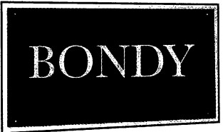
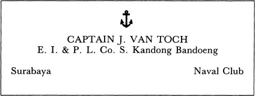

Ai mà chẳng biết rằng người càng quan trọng thì bảng tên gắn trước cửa nhà họ càng ngắn gọn. Trên cửa tiệm ở Jevíčko ngày xưa, và hai bên cửa chính và trên các cửa sổ, già Max Bondy phải thông báo bằng những chữ cái to tướng rằng đây là Max Bondy, chuyên hàng dệt may mặc với đủ các loại trang phục cưới hỏi, khăn trải giường, khăn tắm, khăn lau chén, khăn phủ bàn ghế, vải vóc, tơ lụa, màn cửa, rèm trướng, và đủ mọi nhu cầu áo quần may vá. Thành lập từ năm 1885. Còn trên cửa nhà con trai lão, G.H. Bondy, thuyền trưởng của nền công nghiệp, chủ tịch tập đoàn MEAS, cố vấn thương mại, cố vấn môi giới, Phó chủ tịch Liên minh Công nghiệp (Confederation of Industry), Lãnh sự Cộng hòa Ecuador (Consulado de la República Ecuador), thành viên của tùm lum hội đồng cố vấn, vân vân và vân vân, chỉ có mỗi một tấm bảng nhỏ bằng kính màu đen với mấy chữ vàng ghi mỗi một từ:

Chỉ có vậy. Chỉ là Bondy. Người khác chắc phải ghi trên cửa là Julius Bondy, Đại diện General Motors, hay Ervín Bondy, Bác sĩ Tiến sĩ Y khoa, hay S. Bondy & Company; nhưng chỉ có mỗi Bondy này là độc một chữ Bondy không cần thêm thắt gì nữa. (Tôi nghĩ Giáo Hoàng mà gắn bảng tên trước cửa nhà thì cũng sẽ viết mỗi cái tên Pius chứ không cần thêm chức tước hay chữ số nào. và Đức chúa Trời cũng đâu có bảng tên nào, dù ở trên Thiên đường hay dưới Hạ giới. Và bạn phải tự tìm hiểu xem ai với ai đang sống ở nơi Ngài đang sống. Nhưng điều đó không liên quan gì đến chuyện này nên ta chỉ nói sơ qua thôi) .
Một ngày nóng chảy mỡ, đứng trước tấm bảng bằng kính đó là một quý ông đội mũ thủy thủ trắng, đang lấy chiếc khăn tay xanh lau những ngấn thịt núng nính dưới cằm. Sống ở cái nhà gì mà to khốn kiếp, ông nghĩ thầm, và hơi lưỡng lự, ông giật cái núm đồng rung chuông.
Ngài gác cổng Povondra xuất hiện, nhìn người đàn ông to béo ngoài cửa bằng ánh mắt dò xét từ chân lên tới tận chiếc mũ có gắn tua vàng, rồi hỏi có phần e dè:
- Ông có việc gì cần?
- Có việc chứ, anh bạn, - quý ông kia trả lời oang oang. - Ông Bondy có ở đây không?
- Ông có công việc gì với ông Bondy? - Câu hỏi lạnh băng của ngài gác cổng.
- Nói với ông ấy là có Thuyền trưởng van Toch từ Surabaya tới và cần gặp. Ja, - ông sực nhớ ra, - danh thiếp của tôi đây. - Và ông đưa cho quý ngài Povondra một tấm danh thiếp có in tên và có hình một mỏ neo dập nổi:

Ông Povondra cúi đầu ngẫm nghĩ một hồi. Có nên nói với người này là ông Bondy vắng nhà không? Hay nói là rất tiếc, ông Bondy đang có cuộc hẹn quan trọng? Có những vị khách cần phải thông báo, và có những vị khách mà một tay gác cổng thông minh sẽ tự giải quyết lấy. Ông Povondra đau khổ nhận ra cái trực giác thường hướng dẫn mình trong những vụ này đã tê liệt; người to béo đang đứng ngoài kia không hiểu sao lại không rơi vào loại khách mà thông thường không cần thông báo, coi bộ ông ta không phải một tay chào hàng, hay viên chức của một cơ quan từ thiện. Trong lúc đó, Thuyền trưởng van Toch cứ khịt mũi và lấy khăn tay lau trán mãi; đồng thời đôi mắt xanh nhạt của ông cứ chớp chớp một cách ngây thơ. Ông Povondra đột nhiên quyết định là phải đích thân chịu trách nhiệm về người này.
- Mời Thuyền trưởng van Toch vào trong, - ông nói, - tôi sẽ báo với ông Bondy.
Thuyền trưởng J. van Toch lại móc chiếc khăn tay xanh ra lau trán và nhìn quanh tiền sảnh. Mẹ kiếp, tay Gustl này bày biện ra trò; trông cứ như cabin hạng nhất trên mấy chiếc du thuyền đi từ Rotterdam tới Batavia. Cả đống tiền chứ không phải chơi, và bao nhiêu của cải này là của cái thằng Do Thái mặt tàn nhang, viên thuyền trưởng thấy nể phục.
Trong lúc đó, trong văn phòng, G.H. Bondy đang trầm ngâm xem danh thiếp của viên thuyền trưởng.
- Thế người này muốn gặp ta làm gì? - ông hỏi với giọng nghi ngờ.
- E là tôi không biết, thưa ông, - ông Povondra cung kính nói lí nhí.
Ông Bondy vẫn cầm tấm danh thiếp trong tay. Một mỏ neo dập nổi. Thuyền trưởng J. van Toch, Surabaya… là chỗ nào vậy nhỉ? Ở đâu đó bên Java chăng? Có vẻ rất xa vời đối với ông Bondy. Kandong Bandoeng , nghe cứ boong boong như tiếng chiêng tiếng cồng. Surabaya. Mà hôm nay lại đúng là ngày trời nóng bức hệt như đang ở vùng nhiệt đới. Surabaya. Ông Bondy ra lệnh:
- Thôi được, anh đưa ông ta vào đây.
Người mập béo đội chiếc mũ thuyền trưởng đứng ở ngưỡng cửa và giơ tay chào. G.H. Bondy ra đón.
- Very glad to meet you, Captain. Please, come in, -ông nói bằng tiếng Anh. - Hân hạnh gặp ông. Xin mời vào.
- Nazdar, nazdárek, ông Bondy - Thuyền trưởng vui vẻ nói oang oang bằng tiếng Tiệp. - Xin chào, xin chào.
- Ông là người Tiệp sao? - ông Bondy ngạc nhiên.
- Ja, người Tiệp. Thậm chí chúng ta còn quen biết nhau nữa kìa, ông Bondy. Cùng quê Jevíčko. Vantoch nhà buôn ngũ cốc đó, do you remember, ông có nhớ không?
- Đúng rồi, đúng rồi, - G.H. Bondy đáp lại, thể hiện sự hào hứng, mặc dù trong lòng có chút thất vọng (hóa ra y đâu phải người Hà Lan như cái tên trong danh thiếp) . - Vantoch nhà buôn ngũ cốc, ở quảng trường thành phố phải không? Mà ông vẫn y như ngày xưa, ông Vantoch! Chẳng thay đổi gì cả! Thế chuyện buôn bán ngũ cốc phát đạt chứ?
- Thanks, cám ơn, - Thuyền trưởng lịch sự đáp. - Cũng lâu lắm rồi từ khi cha tôi…, tiếng Tiệp nói làm sao…?
- Ông ấy mất rồi sao? Ồ, phải rồi, hóa ra ông là con ông ấy… - Ánh mắt Bondy bỗng linh động hẳn lên vì đã chợt nhớ ra. - Ôi Vantoch! Hóa ra anh là cái thằng Vantoch hay đánh nhau với tôi hồi hai đứa còn nhỏ ở Jevíčko!
- Ja, thằng đó là tôi bây giờ đây, ông Bondy, - Thuyền trưởng nghiêm giọng xác nhận. - Chính vì chuyện đó mà tôi bị tống cổ đi Moravská Ostrava.
- Hồi đó tôi với anh cứ đánh lộn hoài. Nhưng anh khỏe hơn tôi, - ông Bondy thừa nhận một cách mã thượng.
- Ja, tôi khỏe hơn. Anh hồi đó đúng là một thằng Do Thái nhỏ con, yếu ớt mà, anh Bondy. Và anh thì luôn lãnh đủ. Ăn đòn nhừ tử.
- Đúng là như vậy, - G.H. Bondy bồi hồi nhớ lại. - Nhưng mà ngồi xuống đã, anh bạn! Anh nhớ tới tôi thật là quý hóa quá! Mà làm sao anh lại tới đây?
Thuyền trưởng van Toch trịnh trọng ngồi xuống chiếc ghế bành bọc da và đặt chiếc mũ xuống sàn.
- Tôi nghỉ phép, anh Bondy. That’s so. Vậy đó!
- Anh còn nhớ, - ông Bondy hỏi, đắm chìm vào kỷ niệm, - hồi đó anh thường quát nạt tôi: đồ Do Thái, đồ Do Thái, ma tha quỷ bắt mày…
- Ja, Thuyền trưởng thừa nhận và ầm ĩ tống một ít cảm xúc vào chiếc khăn tay xanh. - Ái chà, thời đó thật tuyệt, phải không? Nhưng giờ còn có nghĩa gì đâu? Thời gian qua nhanh quá. Giờ cả hai đứa mình đều già và đều là thuyền trưởng.
- Đúng vậy, anh là thuyền trưởng, - ông Bondy tự nhắc mình. - Ai mà ngờ chứ? Một Captain of Long Distances, thuyền trưởng viễn dương, nói vậy có đúng không?
- Yes, sir. Đúng rồi. Một highseaer. Hãng tàu biển Đông Ấn và Thái Bình Dương, sir.
- Một nghề tuyệt vời, - ông Bondy thở dài. - Giá mà được thì tôi đổi chỗ với anh liền, Thuyền trưởng ạ. Kể tôi nghe chuyện của anh đi.
- Được thôi, - Thuyền trưởng càng lúc càng sôi nổi. - Có một chuyện tôi muốn kể anh nghe, anh Bondy. Chuyện rất hay ho, anh bạn. - Thuyền trưởng van Toch nhìn quanh, lộ vẻ bứt rứt.
- Anh đang tìm cái gì à, Thuyền trưởng?
- Ja. Anh không uống bia à, anh Bondy? Tôi khát khô cổ suốt từ Surabaya tới đây. - Thuyền trưởng bắt đầu lục lọi trong đống túi quần và lôi ra chiếc khăn tay xanh, một bọc vải chứa thứ gì đó, một túi đựng thuốc lá sợi, một con dao, một la bàn và một xấp giấy bạc. - Tôi nghĩ chúng ta nên nhờ ai đi mua ít bia về đây. Có thể nhờ cậu tiếp viên đã đưa tôi vào cabin của anh không?
Ông Bondy nhấn chuông.
- Khỏi lo, Thuyền trưởng. Tạm thời anh có thể làm điếu xì-gà…
Thuyền trưởng nhón một điếu xì-gà có dải băng vàng-đỏ và hít hương thơm.
- Thuốc lá xứ Lombok. Trộm cắp cả đống ở đó, vì giá trị của thứ này. - Trước sự kinh hoảng của ông Bondy, Thuyền trưởng vừa nói vừa vò nát điếu xì-gà đắt giá trong bàn tay hộ pháp rồi lấy những sợi thuốc rời nhét vào chiếc tẩu. - Ja, Lombok. Lombok hoặc là Sumba.
Tới lúc đó ông Povondra đã lại lặng lẽ xuất hiện ở ngưỡng cửa. Ông Bondy ra lệnh:
- Mang cho chúng tôi ít bia.
Ông Povondra nhướng mày.
- Bia? Bao nhiêu mới được?
- Bốn lít, - Thuyền trưởng lầm bầm trong lúc ông giẫm chân lên tấm thảm dập tắt que diêm mới dùng. - Ở Aden nóng kinh hoàng đó nghe. À, anh Bondy, tôi có tin hay ho cho anh đây. Ở Quân đảo Sunda, biết không? Có cơ hội tuyệt vời ở đó. A big business. Nhưng tôi phải cho anh biết toàn bộ story, tiếng Tiệp nói làm sao?
- Povídka. Câu chuyện.
- Ja, toàn bộ câu chuyện. Chờ chút. - Thuyền trưởng hướng đôi mắt xanh lên trần nhà trong lúc cố nhớ lại. - Tôi không biết phải bắt đầu từ đâu.
(Lại một vụ áp-phe nữa chứ gì, G.H. Bondy nghĩ thầm. Chúa ơi, thật chán mớ đời. Rồi hắn sẽ nói với mình về chuyện xuất khẩu máy may qua Tasmania hay nồi xúp-de với kim băng qua đảo Fiji. Cơ hội tuyệt vời, vâng, tôi biết. Đó là nghề của tôi mà. Nhưng tôi đâu phải thằng bán ve chai, mẹ kiếp! Tôi là người phiêu lưu. Tôi là thi sĩ theo cách riêng của mình. Hãy nói tôi nghe về chàng thủy thủ Sinbad! Hãy nói tôi nghe về Surabaya hay Quần đảo Phượng Hoàng. Anh có bao giờ bị hút vào núi nam châm chưa, hay từng bị thần điểu bắt cóc mang về tổ? Sao anh không quay về hải cảng với chuyến hàng toàn ngọc trai, hồi quế và gỗ lim? Không có sao? Thế thì tốt nhất hãy bắt đầu nói dối đi) .
- Chắc là tôi sẽ bắt đầu từ chỗ những con tapa. - Thuyền trưởng nói.
- Con tapa là con gì? - Nhà tài phiệt Bondy ngỡ ngàng.
- Chà, không biết gọi là con gì. Tiếng Tiệp gọi con lizard làm sao?
- Là ještěrky? Con thằn lằn?
- Đúng rồi, mẹ kiếp. Con tapa cũng giông giống con thằn lằn đó, anh Bondy.
- Ở đâu?
- Trên một hòn đảo. Tôi không thể nêu tên ra, anh bạn. Đó là một secret, worth millions, bí mật trị giá bạc triệu đó. - Thuyền trưởng van Toch lấy khăn tay lau trán.
- Ja. Mẹ kiếp, bia đâu rồi?
- Sẽ có ngay thôi, Thuyền trưởng.
- Ja. Vậy thì tốt. Anh Bondy, phải nói là mấy con này đàng hoàng và dễ thương lắm, mấy con thằn lằn đó. Tôi biết rõ chúng mà, anh bạn, - Thuyền trưởng nện nắm tay xuống bàn, - và nếu ai bảo chúng là quỷ quái thì đó là a damned liar, là đồ nói láo khốn khiếp đó, sir. Anh còn quỷ quái hơn, tôi cũng quỷ quái đây, cái thằng Thuyền trưởng van Toch này. Anh cứ tin tôi đi.
G.H. Bondy hoảng hồn. Điên loạn rồi, ông nghĩ thầm. Cái thằng Povondra chó chết đi đâu mất biệt?
- Có cả mấy ngàn con ở đó, đám thằn lằn đó, nhưng rất nhiều con bị chết vì…, tiếng Tiệp gọi shark là con gì?
- Žraloci? Cá mập?
Ja, vì cá mập ăn thịt. Cho nên cái giống thằn lằn này còn rất ít và chỉ có ở mỗi chỗ đó thôi, ở cái vịnh mà tôi không thể cho anh biết tên được.
- Thằn lằn mà sống dưới biển à?
- Ja. Dưới biển. Ban đêm chúng mò lên bờ, nhưng chỉ một lúc sau là chúng lại xuống nước trở lại.
- Thế trông chúng ra làm sao? (Ông Bondy đang cố câu giờ cho tới khi tên Povondra khốn kiếp quay về) .
- Chà, to cỡ con hải cẩu, nhưng khi đi nhón gót trên hai chân sau thì cao chừng này này, - Thuyền trưởng ra dấu. - Tôi không dám nói là loài vật này xinh đẹp đâu. Và thân hình chúng không hề có vảy.
- Vảy?
- Ja, vảy. Chúng nó trụi lủi à, anh Bondy, trơn láng như con cá cóc hay con sa giông. Còn hai chân trước thì giống hai bàn tay con nít, nhưng chỉ có bốn ngón. Tội nghiệp chúng, - Thuyền trưởng thương cảm nói thêm. - Nhưng mấy con vật này hiền lắm, anh Bondy ạ, lại khôn và dễ thương nữa. - Thuyền trưởng ngồi thụp xuống, và giữ nguyên tư thế đó, ông bắt đầu di chuyển lạch bạch tới trước. - Tụi nó đi như thế này này, lũ thằn lằn đó.
Vẫn gắng sức trong tư thế chồm hỗm đó, Thuyền trưởng nhấc tâm thân của mình, nhấp nhỏm đi tới; đồng thời ông đưa hai bàn tay ra phía trước mặt và dán mắt vào ông Bondy ra vẻ cầu khẩn lòng thương, trông như con chó đang nài xin điều gì đó. Thấy thế G.H. Bondy hết sức xúc động và hình như có chút ngượng ngùng. Giữa lúc đó, ông Povondra xuất hiện ở ngưỡng cửa với một bình bia lớn và nhướn mày sửng sốt trước hành vi mất tư cách của viên thuyền trưởng.
- Để bia đây rồi đi ra ngoài, - ông Bondy vội kêu lên.
Thuyền trưởng đứng dậy, thở phì phì.
- Đấy, mấy con vật đó nó giống như thế đấy, anh Bondy. Chúc sức khỏe, - ông nói thêm và nốc một hơi bia. - Kiếm được loại bia này ngon quá, anh bạn. Nhưng trong căn nhà như thế này mà… - Thuyền trưởng quẹt râu mép.
- Nhưng làm sao anh tìm ra những con vật đó, Thuyền trưởng?
- Thì tôi đang định kể tới chuyện đó đây, anh Bondy. Chuyện là vầy. Tôi đang đi tìm ngọc trai ở Tana Masa… - Thuyền trưởng dừng phắt lại. - Hay ở đâu đó quanh vùng đó. Ja, đó là một hòn đảo khác, nhưng tạm thời tôi vẫn giữ bí mật. Thiên hạ bây giờ trộm cắp tày trời, anh Bondy, anh phải lựa lời mà nói. Rồi trong lúc hai thằng Sri Lanka khốn kiếp đang ở dưới nước nạy trai ngọc…
- Trai ngọc?
- Ja. Thứ trai sò bám cứng vào đá giống như bọn Do Thái bám cứng vào lễ giáo, phải lấy dao nạy mới ra được. Đám thằn lằn dưới đó đứng nhìn và hai tên Sri Lanka tưởng đâu những con vật kia là quỷ biển. Tụi nó toàn dân dốt nát, bọn Sri Lanka và Batak đó. Kiểu gì tụi nó cũng tưởng lũ thằn lằn là quỷ sứ. Ja. - Thuyền trưởng hỉ mũi ầm ầm vào khăn tay. - Anh biết đó, đúng là kỳ cục. Tôi không biết có phải dân Tiệp tụi mình có tính tò mò tọc mạch hơn các dân tộc khác hay không, chứ hễ gặp một người Tiệp là tôi lại thấy hắn ta luôn chõ mũi vào mọi thứ để tìm hiểu xem có chuyện gì ở đó. Tôi nghĩ dân Tiệp tụi mình không muốn tin vào bất cứ cái gì. Cho nên cái đầu già ngu ngốc của tôi nảy ra ý định phải đi tới nhìn cho rõ mấy con quỷ này. Đúng, lúc đó tôi say, nhưng say là vì không thể xua đuổi cái đám quỷ ngu ngốc đó ra khỏi tâm trí. Dưới đó*, ngay cái vùng equator, ờ, vùng xích đạo, thì chuyện gì cũng có thể xảy ra, anh bạn ạ. Cho nên chiều hôm đó tôi đi xuống xem qua một vòng Vịnh Quỷ Sứ…
Ông Bondy cố hết sức hình dung cảnh tượng một vịnh biển vùng nhiệt đới, chung quanh là núi đá và rừng già.
- Rồi sao?
- Thế là tôi ngồi bên bờ vịnh rồi kêu ts-ts-ts để dụ mấy con quỷ đó tới. Rồi một chặp sau nghe anh, một con gì giống như thằn lằn ở dưới nước bò lên. Nó đứng trên hai chân sau, cả thân hình lắc lư ngo ngoe. Rồi nó kêu ts-ts-ts với tôi. Nếu tôi mà không say chắc tôi móc súng ra bắn nó rồi đó, anh bạn, nhưng tôi tỉnh bơ như dân Ăng-lê nên tôi nói với nó: Ê, lại đây, lại đây đi mày, nào, tapa cưng, lại đây, tao không hại mày đâu.
- Anh nói với nó bằng tiếng Tiệp à?
- Không, tiếng Mã Lai. Ở vùng dưới đó người ta chủ yếu nói thứ tiếng đó. Nó không nói gì, chỉ đi lạch bạch vài bước tới gần, và õng ẹo như con nít mắc cỡ không dám mở miệng. Còn ở dưới biển quanh đó thì còn cả mấy trăm con đang thò mõm lên khỏi mặt nước theo dõi tôi. Thế là tôi… ờ, mà đúng là lúc đó tôi say, tôi ngồi xổm xuống và bắt đầu uốn éo, õng ẹo như mấy con vật đó để cho chúng khỏi sợ tôi. Rồi thêm một con khác bò lên bờ, lớn bằng cỡ đứa nhỏ mười tuổi, và nó cũng bắt đầu đi lạch bạch tới trước. Và trong bàn chân trước, nó nắm một con sò. - Thuyền trưởng nốc một hơi bia. - Cạn ly, anh Bondy. Ờ, đúng là lúc đó tôi say ngất ngư, nên tôi mới bảo nó: Ê, mày khôn quá hả, mày muốn gì đó? Muốn tao cạy miệng con sò cho mày phải không? Ja, vậy thì tới đây đi, tao lấy dao nạy ra cho . Nhưng nó chỉ đứng đó, không dám tới gần hơn. Thế là tôi lại bắt đầu uốn éo, õng ẹo như gái tơ e lệ. Sau đó nó lạch bạch đi tới chỗ tôi, tôi từ từ chìa tay ra đón lấy con sò trong bàn chân trước của nó. Đấy, anh thừa biết là cả tôi lẫn nó đều hơi sợ, nhưng tôi thì đã say rồi. Thế là tôi lấy dao nạy miệng con sò; tôi sờ bên trong xem có ngọc ngà gì không nhưng không thấy, chỉ có thứ thịt mềm mềm, nhớt nhớt bên trong hai mảnh vỏ. Được rồi, tôi nói ts-ts-ts, mày thích thì ăn đi. Rồi tôi thảy con sò đã cạy miệng cho nó. Anh mà thấy cái cảnh nó liếm sạch thì biết, anh bạn. Với lũ thằn lằn này, trai sò hẳn là một thứ titbit hảo hạng… titbit tiếng Tiệp nói sao?
- Lahůdka. Món ngon.
- Ja, món ngon. Chỉ có điều là mấy con vật tội nghiệp này có mấy ngón tay nhỏ xíu nên không thể nạy hai mảnh vỏ cứng được. Đời thật chó má, ja! - Thuyền trưởng nốc một hơi bia nữa. - Thế là trong đầu tôi bỗng hiểu ra hết nghe anh. Khi đám thằn lằn này thấy hai thằng Sri Lanka nạy trai ngọc, nhất định tụi nó đã bảo nhau, a ha, cái giống kia cũng ăn trai sò, và chúng muốn xem hai thằng Sri Lanka kia nạy miệng sò bằng cách nào. Trong hai thằng Sri Lanka thì có một thằng trông khá giống con thằn lằn khi nó lặn xuống nước, nhưng trong đám thằn lằn này thì có một con khôn hơn cả dân Sri Lanka hay dân Batak vì nó muốn học hỏi. Tụi Batak đời nào muốn học hỏi cái gì, trừ học ba cái trò trộm cắp. -Thuyền trưởng van Toch nói thêm với giọng uất ức. - Tôi ở trên bờ biển cứ ts-ts-ts và cứ uốn éo õng ẹo như thằn lằn mãi nên có lẽ chúng cũng tưởng tôi là một con sa giông cỡ bự nào đó. Vì thế chúng cũng bớt sợtôi hơn và chịu tới gần hơn để tôi nạy miệng trai sò cho. Đúng là những con vật thông minh và đáng tin cậy. - Thuyền trưởng van Toch đỏ mặt. - Khi tôi đã quen chúng hơn, tôi cởi hết quần áo ra, thế là tôi càng trông giống chúng nó, trụi lủi; nhưng chúng vẫn còn thắc mắc khi thấy lông lá trên ngực tôi và các chỗ tương tự. - Thuyền trưởng móc khăn tay lau chiếc cổ đỏ ửng của ông. - Hy vọng là tôi không làm mất quá nhiều thời giờ của anh, anh Bondy.
G.H. Bondy đã bị câu chuyện thu hút.
- Không, không đâu. Xin kể tiếp đi, ông Thuyền trưởng.
- Rồi, kể liền mà. Trong khi con thằn lằn này ăn sạch con sò thì tất cả những con kia đứng nhìn, rồi chúng cũng bò lên bờ. Có nhiều con còn mang theo cả trai sò trong hai bàn chân trước… kể cũng lạ thật, anh bạn, chúng chỉ có mấy ngón chút xíu như ngón tay con nít, không có ngón cái, vậy mà chúng lôi được những con sò ra khỏi vách đá. Lúc đầu chúng còn ngượng ngùng nhưng rồi chúng để yên cho tôi lấy trai sò trên tay chúng. Thiệt tình, thứ đó có phải loại trai có ngọc bên trong đâu, chúng mang tới chỗ tôi đủ thứ nghêu sò ốc hến linh tinh mà chẳng thứ nào có ngọc ngà gì bên trong, tôi quẳng hết xuống biển rồi nói với chúng, không phải loại này đâu, các con, loại này không đáng nạy vỏ làm gì cho uổng phí con dao. Đợi đến khi chúng mang tới đúng loại trai ngọc thì tôi mới lấy dao nạy vỏ xem kỹ xem bên trong có gì không. Sau đó tôi đưa phần còn lại cho chúng liếm sạch. Tới lúc đó thì đã có cả vài trăm con lizard như thế ngồi quanh tôi, quan sát cách tôi cạy vỏ sò. Có mấy con còn tự làm theo, chúng lấy những mảnh vỏ vung vãi chung quanh cố rạch quanh miệng con sò. Đúng là kỳ lạ, anh bạn. Đâu có con vật nào biết sử dụng công cụ đâu; con vật thì chỉ biết làm theo bản năng tự nhiên thôi. Thú thật là tôi từng thấy ở Buitenzorg có một con khỉ biết dùng dao mở lon đồ hộp; nhưng con khỉ thì đâu hẳn là con vật nữa. Lúc đó, thiệt tình là tôi thấy kỳ lạ quá. - Thuyền trưởng nốc một hơi bia. -Tối hôm đó, anh Bondy, tôi tìm được mười tám viên ngọc trai trong số trai sò đó. Có viên nhỏ, có viên lớn hơn, và có ba viên to bằng hạt đào đó, anh Bondy. - Thuyền trưởng van Toch gật gù với vẻ nghiêm trọng. - Tới sáng, quay về tàu rồi tôi mới tự nhủ, Thuyền trưởng van Toch ơi, chỉ là giấc mơ thôi, sir, ông say quá mà, sir. Nhưng làm sao tôi tin điều đó cho được khi trong túi tôi vẫn còn mười tám viên ngọc. Ja.
- Tôi chưa hề nghe chuyện nào hay như chuyện này, - ông Bondy nói không nên lời.
- Đó, thấy chưa, anh bạn, - Thuyền trưởng hào hứng nói. - Suốt cả ngày hôm đó tôi cứ ngẫm nghĩ mãi. Mình thuần hóa những con thằn lằn này được không? Ja. Thuần hóa rồi huấn luyện cho chúng lấy trai ngọc. Nhất định trai ngọc phải nhiều kinh khủng dưới đáy Vịnh Quỷ Sứ. Thế là buổi chiều tôi lại đi xuống đó, nhưng đi sớm hơn. Khi mặt trời bắt đầu lặn, đám thằn lằn lại thò mõm trên mặt nước, con chỗ này, con chỗ kia, cho đến khi cả một vùng biển đầy nhóc chúng nó. Tôi ngồi trên bờ cứ kêu ts-ts-ts. Thình lình tôi ngẩng lên và thấy một con cá mập, chỉ thấy cái vây nhọn nhô trên mặt biển. Sau đó là tiếng nước bắn tung tóe và một con thằn lằn toi đời. Tôi đếm được mười hai con cá mập bơi tà tà vào Vịnh Quỷ Sứ. Anh Bondy, chỉ trong một buổi chiều cái đám quát vật đó đã xơi tái hơn hai chục con thằn lằn của tôi, - Thuyền trưởng kêu lên và hỉ mũi tức tối. - Ja! Hơn hai chục con! Rõ ràng thôi, một con thằn lằn trần trụi làm sao tự bảo vệ được với hai bàn tay tí xíu như thế. Anh mà thấy cái cảnh đó thì phải phát khóc lên. Anh bạn, phải chi anh thấy cái cảnh đó…
Thuyền trưởng ngừng lời, suy nghĩ một hồi lâu rồi mới nói tiếp. - Tôi rất thương súc vật, anh biết mà, - ông hướng đôi mắt xanh về phía G.H. Bondy. - Không biết chuyện này anh nghĩ sao, Thuyền trưởng Bondy…
Ông Bondy gật đầu tỏ vẻ đồng tình.
- Vậy thì tốt, - Thuyền trưởng van Toch thấy hài lòng. - Mấy con tapa đó hiền và khôn lắm; anh nói điều gì chúng cũng chăm chú nghe như con chó lắng nghe lời chủ. Đặc biệt hai bàn tay của chúng, cứ như bàn tay trẻ con ấy. Anh biết mà, tôi già rồi mà chẳng có gia đình vợ con gì… Ja, tuổi già có thể cô đơn lắm, - Thuyền trưởng lầm bầm trong lúc cố kiềm chế cảm xúc. - Mấy con này dễ thương nhưng có ích gì chứ? Giá như đám cá mập đừng có ăn thịt chúng như thế! Rồi khi tôi đuổi theo, ném đá vào mấy con cá mập đó, thì những con tapa cũng bắt chước ném đá theo. Chắc anh không tin đâu, anh Bondy. Thật đó, chúng ném đá đâu có xa được bao nhiêu vì bàn tay chúng có chút xíu hà, nhưng cái cảnh tượng ấy - thật kỳ lạ! Tôi bảo chúng, tụi bay thông minh đó, tụi bay lấy con dao của tao tự cạy miệng mấy con sò thử xem có được không. Thế là tôi đặt con dao xuống đất. Lúc đầu chúng hơi ngần ngại, nhưng rồi một con làm thử, nhấn mũi dao vào giữa hai mảnh vỏ sò. Mày phải đè xuống mới nạy lên được, tôi bảo nó, đè đi, thấy chưa? Xoay xoay lưỡi dao, như thế này, và đó, xong rồi. Cái con tội nghiệp đó, nó cứ thử mãi rồi cuối cùng cũng nạy được và hai cái vỏ tách ra. Đó, thấy chưa, tôi nói. Đâu có khó phải không? Nếu một thằng Batak vô đạo hay một thằng Sri Lanka còn làm được thì sao một con tapa lại không làm được chứ hả? Vậy đấy, anh Bondy, tôi không nói với đám thằn lằn đó là chúng thật tuyệt vời và phi thường, loài vật mà biết làm như thế thì đúng là kỳ lạ, nhưng bây giờ tôi có thể nói với anh là tôi… tôi… lúc đó tôi hoàn toàn sững sờ.
- Cứ như trong mơ, - ông Bondy đáp.
- Ja, đúng vậy. Cứ như trong mơ. Điều đó khiến tôi hoang mang tới mức tôi cho tàu neo thêm ba ngày nữa và cứ chiều chiều lại xuống Vịnh Quỷ Sứ và rồi lại chứng kiến cái cảnh lũ cá mập ăn thịt những con thằn lằn của tôi. Đêm đó tôi thề sẽ không bỏ qua chuyện này, anh bạn. Thậm chí tôi còn thề danh dự với chúng nữa, anh Bondy.
Các tapa cưng, có trăng sao khốn kiếp trên trời chứng giám, Thuyền trưởng van Toch này thề sẽ cứu tụi bay.